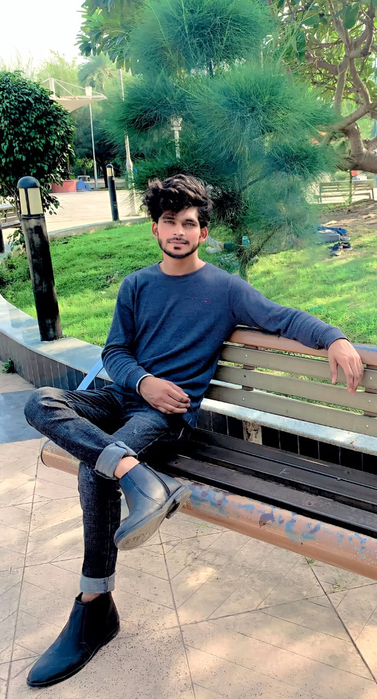

About Me
Diwakar Nayak, born on 2nd February 2002 in Guna, Madhya Pradesh. I am a passionate Software Engineer .
Explore my work on < a href="https://github.com/Diwakarr-nayak/Diwakar_port.git" target="_blank">GitHub and connect with me on < a href="https://www.linkedin.com/in/diwakar-nayak-b9844a229" target="_blank">LinkedIn.
